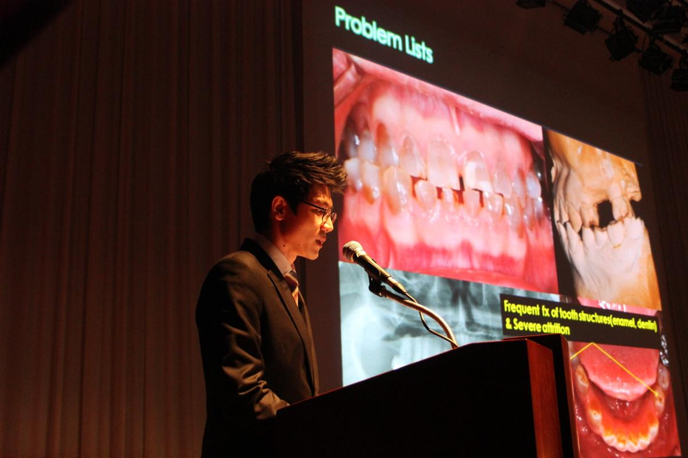

자연치아를 먼저
치아를 살릴 수 있는 가능성을 검토하고, 치료와 경과 관찰의 선택지를 함께 설명합니다.
빠른 결정보다 정확한 판단, 화려한 말보다 이해할 수 있는 설명을 중요하게 생각합니다.
치아를 살릴 수 있는 가능성을 검토하고, 치료와 경과 관찰의 선택지를 함께 설명합니다.
치료가 필요한 이유와 과정, 예상 비용을 이해하기 쉽게 안내합니다.
보철물과 임플란트도 정기적인 점검과 관리가 필요합니다. 치료 이후의 유지관리까지 생각합니다.
진단과 상담을 통해 개인의 구강 상태에 적합한 방법을 선택합니다.
의료 환경과 근거는 계속 바뀝니다. 학술 활동과 동료 의료진과의 교류를 통해 배운 내용을 진료 현장에서 꾸준히 고민합니다.
학회·학술대회와 강연 등 실제 학술 활동의 현장을 사진으로 소개합니다.
학술 활동 살펴보기

구강 건강은 진료실 밖의 일상에서도 이어집니다. 지역사회 구강보건교육과 사회공헌 활동의 기록을 차근차근 모아 소개하겠습니다.
사회공헌 활동 보기 →